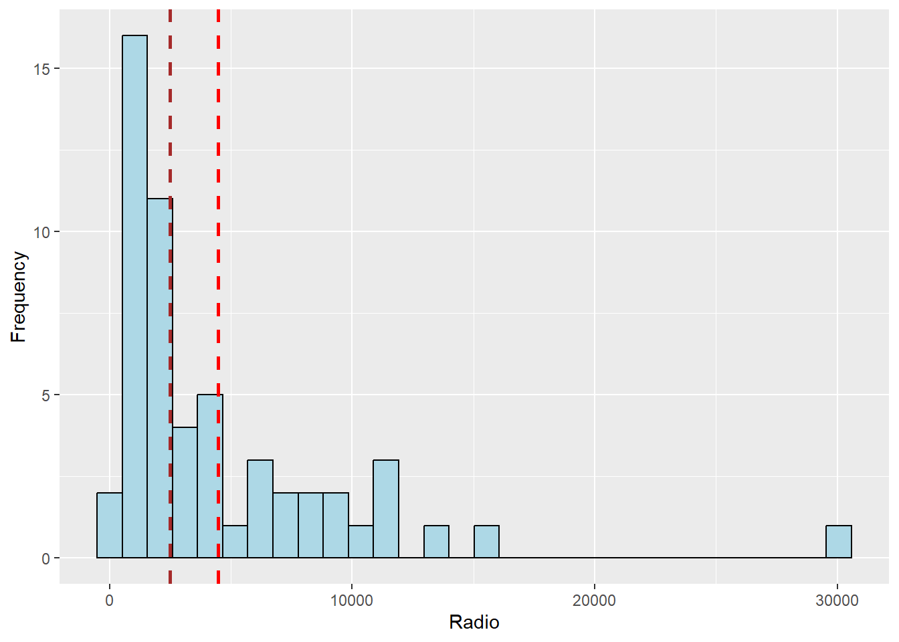

pacman::p_load(knitr, rgdal, spdep, tmap, sf,
ggpubr, cluster, factoextra, NbClust,
heatmaply, corrplot, psych, tidyverse)Hands On Exercise 3.1 - Geographical Segmentation with Spatially Constrained Clustering Techniques
Overview
In this hands-on exercise, we are interested to delineate Shan State, Myanmar into homogeneous regions by using multiple Information and Communication technology (ICT) measures, namely: Radio, Television, Land line phone, Mobile phone, Computer, and Internet at home.
Getting Started
Firstly, we load the required packages in R
Spatial data handling
- sf, rgdal and spdep
Attribute data handling
- knitr, tidyverse, especially readr, ggplot2 and dplyr
Choropleth mapping
- tmap
Multivariate data visualisation and analysis
- coorplot, ggpubr, and heatmaply
Cluster analysis
cluster
ClustGeo
Importing & preparing the data
Geospatial Data
In this section, we will import Myanmar Township Boundary GIS data and its associated attrbiute table into the R environment.
The Myanmar Township Boundary GIS data is in ESRI shapefile format. It will be imported into R environment by using the st_read() function of sf.
As we are only interested in Shan State, we will filter only values that represents the Shan State.
shan_sf = st_read(dsn="data/geospatial", layer="myanmar_township_boundaries") %>%
filter(ST %in% c("Shan (East)", "Shan (North)", "Shan (South)"))Reading layer `myanmar_township_boundaries' from data source
`D:\Allanckw\ISSS624\Hands-on_Ex4\data\geospatial' using driver `ESRI Shapefile'
Simple feature collection with 330 features and 14 fields
Geometry type: MULTIPOLYGON
Dimension: XY
Bounding box: xmin: 92.17275 ymin: 9.671252 xmax: 101.1699 ymax: 28.54554
Geodetic CRS: WGS 84shan_sfSimple feature collection with 55 features and 14 fields
Geometry type: MULTIPOLYGON
Dimension: XY
Bounding box: xmin: 96.15107 ymin: 19.29932 xmax: 101.1699 ymax: 24.15907
Geodetic CRS: WGS 84
First 10 features:
OBJECTID ST ST_PCODE DT DT_PCODE TS TS_PCODE
1 163 Shan (North) MMR015 Mongmit MMR015D008 Mongmit MMR015017
2 203 Shan (South) MMR014 Taunggyi MMR014D001 Pindaya MMR014006
3 240 Shan (South) MMR014 Taunggyi MMR014D001 Ywangan MMR014007
4 106 Shan (South) MMR014 Taunggyi MMR014D001 Pinlaung MMR014009
5 72 Shan (North) MMR015 Mongmit MMR015D008 Mabein MMR015018
6 40 Shan (South) MMR014 Taunggyi MMR014D001 Kalaw MMR014005
7 194 Shan (South) MMR014 Taunggyi MMR014D001 Pekon MMR014010
8 159 Shan (South) MMR014 Taunggyi MMR014D001 Lawksawk MMR014008
9 61 Shan (North) MMR015 Kyaukme MMR015D003 Nawnghkio MMR015013
10 124 Shan (North) MMR015 Kyaukme MMR015D003 Kyaukme MMR015012
ST_2 LABEL2 SELF_ADMIN ST_RG T_NAME_WIN T_NAME_M3
1 Shan State (North) Mongmit\n61072 <NA> State rdk;rdwf မိုးမိတ်
2 Shan State (South) Pindaya\n77769 Danu State yif;w, ပင်းတယ
3 Shan State (South) Ywangan\n76933 Danu State &GmiH ရွာငံ
4 Shan State (South) Pinlaung\n162537 Pa-O State yifavmif; ပင်လောင်း
5 Shan State (North) Mabein\n35718 <NA> State rbdrf; မဘိမ်း
6 Shan State (South) Kalaw\n163138 <NA> State uavm ကလော
7 Shan State (South) Pekon\n94226 <NA> State z,fcHk ဖယ်ခုံ
8 Shan State (South) Lawksawk <NA> State &yfapmuf ရပ်စောက်
9 Shan State (North) Nawnghkio\n128357 <NA> State aemifcsdK နောင်ချို
10 Shan State (North) Kyaukme\n172874 <NA> State ausmufrJ ကျောက်မဲ
AREA geometry
1 2703.611 MULTIPOLYGON (((96.96001 23...
2 629.025 MULTIPOLYGON (((96.7731 21....
3 2984.377 MULTIPOLYGON (((96.78483 21...
4 3396.963 MULTIPOLYGON (((96.49518 20...
5 5034.413 MULTIPOLYGON (((96.66306 24...
6 1456.624 MULTIPOLYGON (((96.49518 20...
7 2073.513 MULTIPOLYGON (((97.14738 19...
8 5145.659 MULTIPOLYGON (((96.94981 22...
9 3271.537 MULTIPOLYGON (((96.75648 22...
10 3920.869 MULTIPOLYGON (((96.95498 22...We can then use glimpse() to verify each field’s data type & available values.
glimpse(shan_sf)Rows: 55
Columns: 15
$ OBJECTID <dbl> 163, 203, 240, 106, 72, 40, 194, 159, 61, 124, 71, 155, 101…
$ ST <chr> "Shan (North)", "Shan (South)", "Shan (South)", "Shan (Sout…
$ ST_PCODE <chr> "MMR015", "MMR014", "MMR014", "MMR014", "MMR015", "MMR014",…
$ DT <chr> "Mongmit", "Taunggyi", "Taunggyi", "Taunggyi", "Mongmit", "…
$ DT_PCODE <chr> "MMR015D008", "MMR014D001", "MMR014D001", "MMR014D001", "MM…
$ TS <chr> "Mongmit", "Pindaya", "Ywangan", "Pinlaung", "Mabein", "Kal…
$ TS_PCODE <chr> "MMR015017", "MMR014006", "MMR014007", "MMR014009", "MMR015…
$ ST_2 <chr> "Shan State (North)", "Shan State (South)", "Shan State (So…
$ LABEL2 <chr> "Mongmit\n61072", "Pindaya\n77769", "Ywangan\n76933", "Pinl…
$ SELF_ADMIN <chr> NA, "Danu", "Danu", "Pa-O", NA, NA, NA, NA, NA, NA, NA, NA,…
$ ST_RG <chr> "State", "State", "State", "State", "State", "State", "Stat…
$ T_NAME_WIN <chr> "rdk;rdwf", "yif;w,", "&GmiH", "yifavmif;", "rbdrf;", "uavm…
$ T_NAME_M3 <chr> "မိုးမိတ်", "ပင်းတယ", "ရွာငံ", "ပင်လောင်း", "မဘိမ်း", "ကလော", "ဖယ်ခုံ", "…
$ AREA <dbl> 2703.611, 629.025, 2984.377, 3396.963, 5034.413, 1456.624, …
$ geometry <MULTIPOLYGON [°]> MULTIPOLYGON (((96.96001 23..., MULTIPOLYGON (…Aspatial Data
Loading the Data
To load the raw data file, we use the read_csv function The imported InfoComm variables are extracted from The 2014 Myanmar Population and Housing Census Myanmar. The attribute data set is called ict. It is saved in R’s * tibble data.frame* format.
We can view the summary statistics with summary()
ict = read_csv("data/aspatial/Shan-ICT.csv") Rows: 55 Columns: 11
── Column specification ────────────────────────────────────────────────────────
Delimiter: ","
chr (4): District Pcode, District Name, Township Pcode, Township Name
dbl (7): Total households, Radio, Television, Land line phone, Mobile phone,...
ℹ Use `spec()` to retrieve the full column specification for this data.
ℹ Specify the column types or set `show_col_types = FALSE` to quiet this message.summary(ict) District Pcode District Name Township Pcode Township Name
Length:55 Length:55 Length:55 Length:55
Class :character Class :character Class :character Class :character
Mode :character Mode :character Mode :character Mode :character
Total households Radio Television Land line phone
Min. : 3318 Min. : 115 Min. : 728 Min. : 20.0
1st Qu.: 8711 1st Qu.: 1260 1st Qu.: 3744 1st Qu.: 266.5
Median :13685 Median : 2497 Median : 6117 Median : 695.0
Mean :18369 Mean : 4487 Mean :10183 Mean : 929.9
3rd Qu.:23471 3rd Qu.: 6192 3rd Qu.:13906 3rd Qu.:1082.5
Max. :82604 Max. :30176 Max. :62388 Max. :6736.0
Mobile phone Computer Internet at home
Min. : 150 Min. : 20.0 Min. : 8.0
1st Qu.: 2037 1st Qu.: 121.0 1st Qu.: 88.0
Median : 3559 Median : 244.0 Median : 316.0
Mean : 6470 Mean : 575.5 Mean : 760.2
3rd Qu.: 7177 3rd Qu.: 507.0 3rd Qu.: 630.5
Max. :48461 Max. :6705.0 Max. :9746.0 There are a total of 11 fields and 55 observation in the tibble data.frame.
Derive new variables with dplyr package
The number of households is used as the measurement unit for the values. The underlying total number of households will influence the results when these statistics are used directly. Typically, the townships with a larger proportion of total households will also have a larger proportion of homes with radio, TV, etc.
We shall calculate the penetration rate of each ICT variable to address this issue by dividing it by the total number of households and multiply by 1000 and adding it to the data frame by using mutate() of dplyr package and renaming the column using rename_with()
new_col_names = c('DT_PCODE', 'DT', 'TS_PCODE', 'TS', 'TT_HOUSEHOLDS', 'RADIO', 'TV', 'LLPHONE', 'MPHONE', 'COMPUTER', 'INTERNET')
old_col_names = c('District Pcode', 'District Name', 'Township Pcode', 'Township Name', 'Total households', 'Radio', 'Television', 'Land line phone', 'Mobile phone', 'Computer', 'Internet at home')
ict_derived = ict %>%
mutate(`RADIO_PR` = `Radio`/`Total households`*1000) %>%
mutate(`TV_PR` = `Television`/`Total households`*1000) %>%
mutate(`LLPHONE_PR` = `Land line phone`/`Total households`*1000) %>%
mutate(`MPHONE_PR` = `Mobile phone`/`Total households`*1000) %>%
mutate(`COMPUTER_PR` = `Computer`/`Total households`*1000) %>%
mutate(`INTERNET_PR` = `Internet at home`/`Total households`*1000) %>%
rename_with(~ new_col_names, all_of(old_col_names)) Reviewing the summary statistics of the newly derived penetration rates
summary(ict_derived) DT_PCODE DT TS_PCODE TS
Length:55 Length:55 Length:55 Length:55
Class :character Class :character Class :character Class :character
Mode :character Mode :character Mode :character Mode :character
TT_HOUSEHOLDS RADIO TV LLPHONE
Min. : 3318 Min. : 115 Min. : 728 Min. : 20.0
1st Qu.: 8711 1st Qu.: 1260 1st Qu.: 3744 1st Qu.: 266.5
Median :13685 Median : 2497 Median : 6117 Median : 695.0
Mean :18369 Mean : 4487 Mean :10183 Mean : 929.9
3rd Qu.:23471 3rd Qu.: 6192 3rd Qu.:13906 3rd Qu.:1082.5
Max. :82604 Max. :30176 Max. :62388 Max. :6736.0
MPHONE COMPUTER INTERNET RADIO_PR
Min. : 150 Min. : 20.0 Min. : 8.0 Min. : 21.05
1st Qu.: 2037 1st Qu.: 121.0 1st Qu.: 88.0 1st Qu.:138.95
Median : 3559 Median : 244.0 Median : 316.0 Median :210.95
Mean : 6470 Mean : 575.5 Mean : 760.2 Mean :215.68
3rd Qu.: 7177 3rd Qu.: 507.0 3rd Qu.: 630.5 3rd Qu.:268.07
Max. :48461 Max. :6705.0 Max. :9746.0 Max. :484.52
TV_PR LLPHONE_PR MPHONE_PR COMPUTER_PR
Min. :116.0 Min. : 2.78 Min. : 36.42 Min. : 3.278
1st Qu.:450.2 1st Qu.: 22.84 1st Qu.:190.14 1st Qu.:11.832
Median :517.2 Median : 37.59 Median :305.27 Median :18.970
Mean :509.5 Mean : 51.09 Mean :314.05 Mean :24.393
3rd Qu.:606.4 3rd Qu.: 69.72 3rd Qu.:428.43 3rd Qu.:29.897
Max. :842.5 Max. :181.49 Max. :735.43 Max. :92.402
INTERNET_PR
Min. : 1.041
1st Qu.: 8.617
Median : 22.829
Mean : 30.644
3rd Qu.: 41.281
Max. :117.985 Exploratory Data Analysis (EDA)
EDA using statistical graphics
We can plot the distribution of the variables (i.e. Number of households with radio) by using appropriate Exploratory Data Analysis (EDA) methods by using functions in ggplot2. We will also place the mean and median lines with geom_vline
A Histogram is useful to identify the overall distribution of the data values (i.e. left skew, right skew or normal distribution)
ggplot(data = ict_derived, aes(x=`RADIO`)) +
geom_histogram(bins=30, color="black", fill="light blue") +
labs(x = "Radio", y = "Frequency") +
geom_vline(aes(xintercept = mean(ict_derived$RADIO)),
color="red", linetype="dashed", linewidth=1) +
geom_vline(aes(xintercept=median(ict_derived$RADIO)),
color="brown", linetype="dashed", linewidth=1)Warning: Use of `ict_derived$RADIO` is discouraged.
ℹ Use `RADIO` instead.
Use of `ict_derived$RADIO` is discouraged.
ℹ Use `RADIO` instead.
From the histogram, we can tell it is positively skewed, with an outlier at the 30k mark.
We can also use boxplot to detect outliers
ggplot(data=ict_derived,
aes(x=`RADIO`)) +
geom_boxplot(color="black",
fill="light blue")
From the boxplot, we can infer that there are 3 outliers, we can find the outliers and display them using kable() below from the code below
ict_derived_outliers_radio = ict_derived %>%
filter(RADIO > 12000)
ict_derived_outliers_radio %>% select ('DT_PCODE', 'DT', 'TS_PCODE', 'TS', 'TT_HOUSEHOLDS', 'RADIO') %>%
kable()| DT_PCODE | DT | TS_PCODE | TS | TT_HOUSEHOLDS | RADIO |
|---|---|---|---|---|---|
| MMR014D001 | Taunggyi | MMR014001 | Taunggyi | 82604 | 30176 |
| MMR014D001 | Taunggyi | MMR014002 | Nyaungshwe | 42634 | 13801 |
| MMR015D001 | Lashio | MMR015001 | Lashio | 64932 | 15307 |
Next, we will plot the histogram of the newly derived variables (i.e. Radio penetration rate) by using the code below. We will also place the mean and median lines with geom_vline
ggplot(data = ict_derived, aes(x=`RADIO_PR`)) +
geom_histogram(bins=30, color="black", fill="light blue") +
labs(x = "Radio", y = "Frequency") +
geom_vline(aes(xintercept = mean(ict_derived$RADIO_PR)),
color="red", linetype="dashed", linewidth=1) +
geom_vline(aes(xintercept=median(ict_derived$RADIO_PR)),
color="brown", linetype="dashed", linewidth=1)Warning: Use of `ict_derived$RADIO_PR` is discouraged.
ℹ Use `RADIO_PR` instead.
Use of `ict_derived$RADIO_PR` is discouraged.
ℹ Use `RADIO_PR` instead.
From the histogram, we can tell it is positively skewed, with an outliers after the 450 mark.
We can also use boxplot to detect outliers
ggplot(data=ict_derived,
aes(x=`RADIO_PR`)) +
geom_boxplot(color="black",
fill="light blue")
From the boxplot, we can infer that there are 1 outlier, we can find the outlier and display it using kable() below from the code below
ict_derived_outliers_radio = ict_derived %>%
filter(RADIO_PR > 450)
ict_derived_outliers_radio %>% select ('DT_PCODE', 'DT', 'TS_PCODE', 'TS', 'TT_HOUSEHOLDS', 'RADIO_PR') %>%
kable()| DT_PCODE | DT | TS_PCODE | TS | TT_HOUSEHOLDS | RADIO_PR |
|---|---|---|---|---|---|
| MMR014D001 | Taunggyi | MMR014007 | Ywangan | 18348 | 484.5215 |